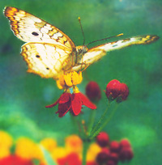

SEASONS OF EARTH AND SKY
Celebrating the season of renewal
April and May-spring rising to its height. In January and February we all long for the first signs of spring: robins returning, crocuses and daffodils blooming, first spring peepers peeping. But by midspring, there is such an incredible richness of living things growing, blooming, mating, and birthing, we hardly know where to begin looking or listening. Is it possible, nevertheless, to pick out some representatives of "high spring," those things that seem to capture our attention more than others? That seem to symbolize this burgeoning moment of the living world's year?
I have some nominees for the representatives of high spring. I also want to look at some religious celebrations held in the spring, many of which seem truly fitted to the season. Finally, we will consider that fire-colored planet, Mars, now putting on its best show since the decade began.
What plants and animals stir us more than any others during April and May? The answer depends to some extent on where you live, of course. And every person's list will be somewhat subjective. But here are some of my favorite candidates.
Let's begin with cherry blossoms. While apple, magnolia, peach, and many other blossoms may be no less beautiful, cherry blossoms seem to have a special place in our hearts.
And nowhere do they bloom more famously in the U.S. than in Washington, D.C., around Easter time. Their lightness, delicacy, and beauty can make one forget the scandal and hot air of politics and politicians and treasure these days before the summer humidity blankets the capital.
Of flowering bushes, which typically bloom in the U.S. in April or May, I'm mighty partial to the many, often flaming, colors of azalea. But I'm not even going to try to select a representative from among all the wonderful individual flowers. We all have our favorites. Some of us are extraordinarily fond of violets. When these appear, you know spring is nearing her prime of showy loveliness and vitality.
Amphibians? Insects? These are also part of nature, even if they don't always inspire the same fondness as do flowers. Spring is frog time. By midseason, the croaking choruses swell to full they will remind you of themselves quite effectively.
Butterflies will capture our attention and affection from now through at least midautumn. Still, spring is the season with which they are most associated. (This is true, for instance, in the Japanese seasonal almanacs used for writing haiku; if the term "butterfly" is used without further specification, it is assumed that it should be related to spring.)
And who could think of spring without thinking of birds? This is the time when they are by far most active and certainly most vocal. They are singing for territory, singing for mate-attraction and (we would like to believe) for the sheer joy of being alive in so fine a season.
Spring is prime time for mating and nesting, eggs and baby birds. As I've written here before, robins and grackles and flashing red-winged blackbirds are the harbingers of spring. But what birds most representative of high spring? Swallows return so faithfully and (in many years) so precisely, you can keep your calendar by them. I recall one early April morning, I drove past our local pond and didn't yet see the swallows; a few hours later, I came back and found the sky over the pond alive with their wheeling and swooping forms. Swallows are, I believe, typically later returnees than the early avian contingent (robins, etc.). I also associate bluebirds with the heart of spring.
Other appropriate bird representatives of high spring are those whose calls are most distinctive and are not heard until the heart of the season. I think of whippoor-wills and bobwhites. The former I always hear first here in southern New Jersey in the last third of April.
There are also plants and plant phenomena so distinctive that they clearly herald high spring. One interesting example is "pine candles." The new growths on pine trees do indeed look like candles, a pretty resemblance that seems to have been noticed by many people. I recall being pleasantly surprised to find my own observation of this phenomenon echoed, for instance, in the writings of Aldo Leopold (check out his Sand County Almanac ) and in Japanese haiku. When the length of the new growth becomes sufficient to stir the candle metaphor depends on where you live. Here, it doesn't become obvious until May. But I see one writer in Florida mentioning pine candles as early as March.
A final plant whose blooming is inextricably tied to spring is dogwood. Its familiar flowers are really bracts. They have become associated with Easter through an imaginative picturing of the bracts as crosses, their brownish-red tips suggesting the bloodprints of Christ on the cross.
Is it coincidence that many of the most joyous and triumphant of religious holidays are observed in spring? In some cases, no. In other cases, it would seem, yes. For instance, Easter falls when it does because of the time of Passover, and the event the latter commemorates could presumably have occurred at other times of the year. Nevertheless, many Christians feel that the triumph of Easter is beautifully reflected in the rebirth of living things in spring.
What are some other religious observances of spring? In Japan, Buddha's birthday is celebrated on April 8 (the year of Prince Siddhartha's birth, by the way, was perhaps 566 B.C. or 563 B.C.).
In the Baha'i faith, the festival of Ridvan-a joyous celebration, which, like spring, is very much about beginnings-runs from April 21 to May 2. And what are arguably the other most uplifting of this faith's holidays occur in April and May (see our Almanac, page 58, for these).
A far more ancient religion that sprang up in Persia some 3,500 years ago is Zoroastrianism. This interesting religion has relatively few adherents left in the world today, but those who remain celebrate one of their special periods of days, called gahambars, from May 1 through 5. The holiday, known as Maidyoi-Zaremaya, celebrates the creation of the sky. Surely sky and earth were created in he spring. Indeed, they seem to be recreated for us each year, when April and day roll round.
This spring, the night sky has some especially majestic sights. Venus is the brightest of the planets, and stands high in the west each nightfall throughout April and May. We'll look more closely at it next issue, as it nears the Earth and gets more interesting in telescopes and even in binoculars. But for now, Venus has some competition: there is a planet appearing sooner and sooner after nightfall in the east. Though not as bright as Venus, its fiery color and rapid brightening in only some but not all years makes it very special.
The planet is Mars.
In early April you'll have to stay up until late evening to see this golden-orange point of light comes up in the east. But by the third week of the month, it is rising at or even before sunset and beaming imposingly as darkness falls. Mars is basically visible all night long in late April and May. By late April it outshines even the brightest star. And for at least a few weeks around May 1-its date of closest approach to Earth-even a very small telescope will you show you its globe.
You'll need a slightly bigger telescope and a night so steady that even the stars aren't twinkling much to see more (perhaps far more) on the surface of Mars. Can you spy the icy white of the dwindling north polar ice cap? See touches of dark grayish or even seemingly greenish surface markings on its otherwise ochre-colored globe?
Now is the time to try. This is the brightest and biggest Mars has looked since 1990. Our unmanned spacecraft visiting it in the late 1990s have shown us many fascinating things about the Red Planet. But there is even more to get excited about in the years ahead. More Mars visits are planned. And 2001 and 2003 will bring much closer, brighter, bigger views of Mars in our sky.
|
VERA STOLMAN/TONY STONE |
Peter Arnold |
 David McGlynn/fpg |